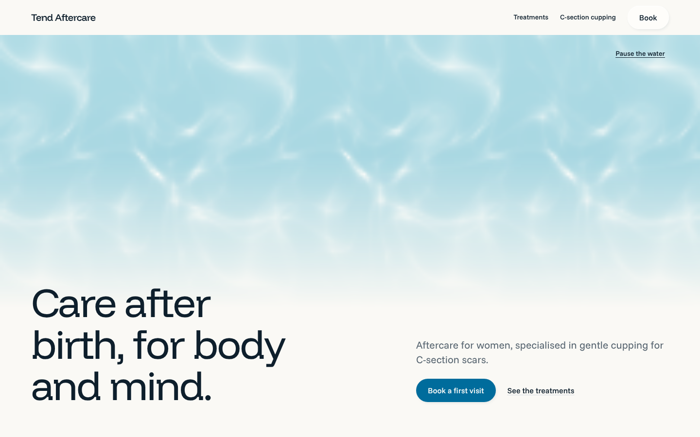
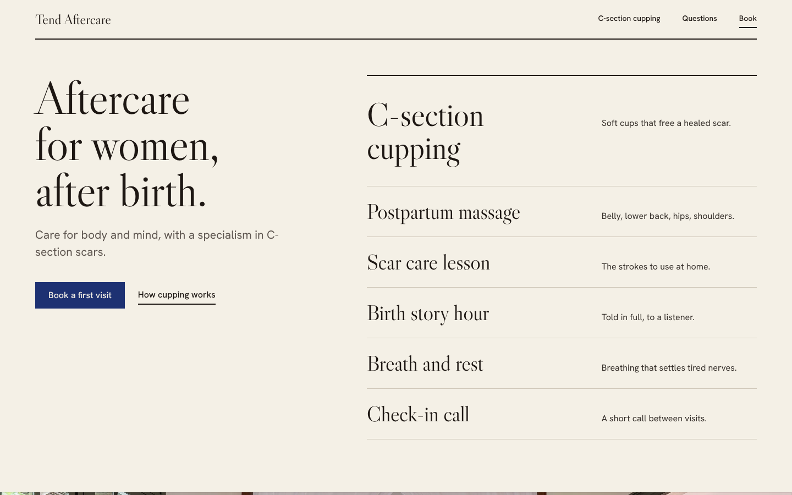
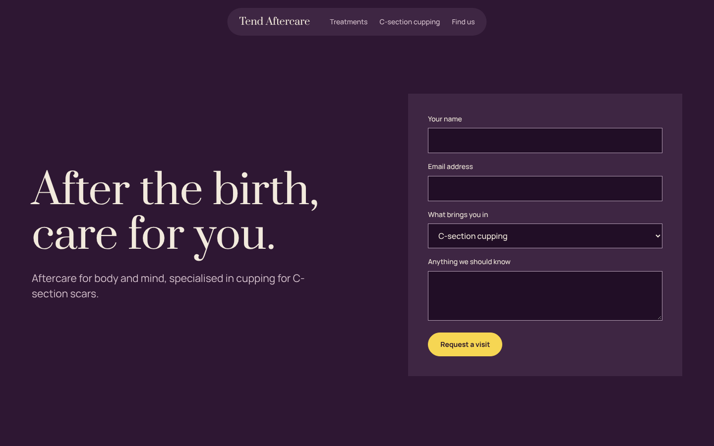

Three versions to choose from
Same content, three different looks. Open each one, scroll it, try it on your phone, then pick the one that feels like you.
-

Version 1: Water light
Light and airy, pool blue, with gently moving water in the hero.
-

Version 2: Pattern book
Warm cream paper, classic serif, deep indigo, treatments listed up front.
-

Version 3: A letter
Deep plum and straw yellow, candlelit, with a letter to the mother.